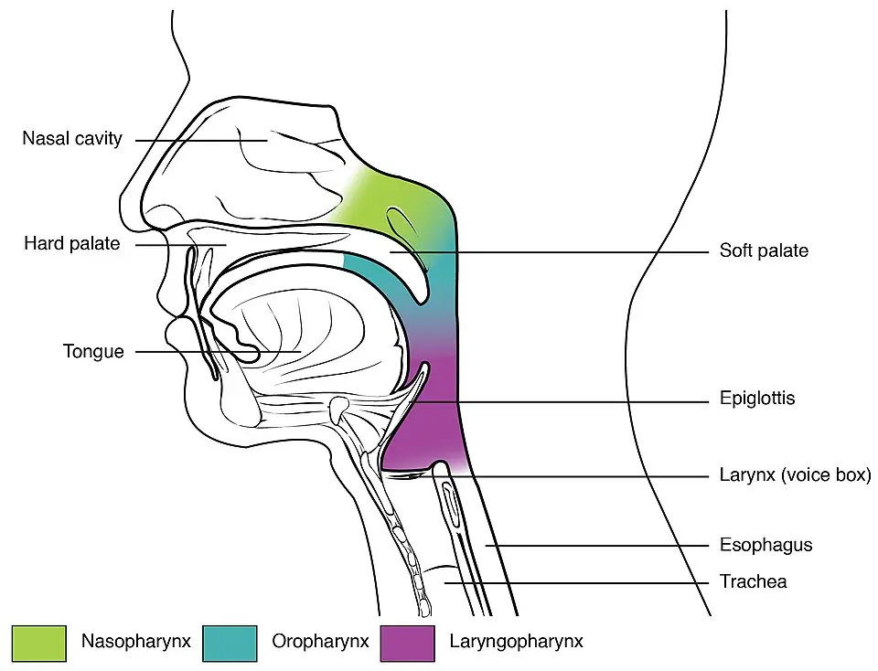
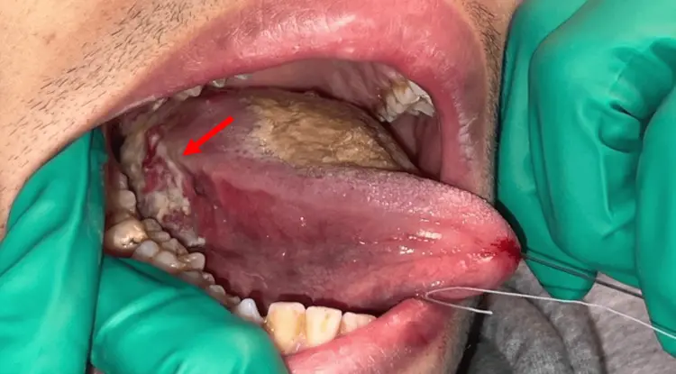

DX.9 — Carcinome épidermoïde buccal ou oropharyngé 🚩 E2
Une ulcération buccale, une gêne pharyngée ou une masse cervicale qui persistent plus de trois semaines doivent faire penser au carcinome épidermoïdeS1S2. Le médecin de premier recours l'évoque surtout chez le fumeur et le buveur, mais aussi chez l'adulte plus jeune exposé au papillomavirus humain (HPV)S1. Il adresse alors le patient à l'oto-rhino-laryngologiste (ORL), car seule la biopsie établit le diagnosticS2S15.
1. Définition
Selon le Centre hospitalier universitaire vaudois (CHUV), le carcinome épidermoïde est une tumeur maligne née de la muqueuse buccale ou pharyngéeS1. L'enseignement des Hôpitaux universitaires de Genève (HUG) le range parmi les cancers des voies aérodigestives supérieures (VADS), qui comprennent aussi le larynxS2. Ce cours traite seulement les localisations buccale et oropharyngée, qui se révèlent par des signes de la bouche ou de la gorgeS1S2.
2. Épidémiologie (Suisse, puis Europe)
Le CHUV décrit le carcinome épidermoïde comme le cancer le plus fréquent en ORL, puisqu'il représente environ 90 % des casS1. En Suisse, le cancer de la bouche et du pharynx touche chaque année un peu plus de 790 hommes et environ 370 femmesS3. Les chiffres nationaux, les écarts entre régions et pays et l'évolution sur trente ans montrent qui consulte et à quel âge. L'émergence des cancers liés au HPV explique aussi pourquoi ce diagnostic concerne désormais des patients plus jeunesS1S4.
Chiffres suisses : nouveaux cas, décès et risque
| Donnée | Hommes | Femmes | Source |
|---|---|---|---|
| Nouveaux cas par an, 2013-2017 | Un peu plus de 790 | Environ 370 | S3 |
| Part de tous les cancers | 3,4 % | 1,9 % | S3 |
| Risque de développer ce cancer au cours de la vie | 1,6 % | 0,7 % | S3 |
| Décès par an, 2013-2017 | Un peu moins de 310 | Environ 130 | S3 |
| Risque de mourir de ce cancer | 0,6 % | 0,2 % | S3 |
| Âge médian au diagnostic | Après 65 ans pour la moitié des cas | Après 67 ans pour la moitié des cas | S3 |
| Personnes vivant avec ce diagnostic depuis moins de dix ans, 2021 | Environ 4170 | Environ 2300 | S3 |
Ce cancer est donc 2,4 fois plus fréquent chez l'homme que chez la femme, selon le rapport national de 2021S3. Son incidence augmente jusqu'à 69 ans chez l'homme et jusqu'à 79 ans chez la femme, puis la mortalité continue de croître avec l'âgeS3.
Le rapport regroupe sous une même rubrique la lèvre, la langue, la gencive, le plancher, le palais, les glandes salivaires et l'amygdaleS3. Ces chiffres débordent donc un peu du carcinome épidermoïde, puisqu'ils incluent les tumeurs des glandes salivairesS3.
Suisse romande, Tessin et comparaison européenne
Les taux d'incidence et de mortalité sont beaucoup plus élevés en Suisse romande et au Tessin qu'en Suisse alémaniqueS3. Cette différence se marque davantage chez l'homme que chez la femme, ce qui oriente la vigilance des praticiens latinsS3.
En comparaison européenne, la France présente les taux d'incidence les plus élevés chez l'homme comme chez la femmeS3. La Suisse se classe au quatrième rang des pays retenus chez l'homme, donc dans la moyenne supérieure européenneS3. Chez la femme, la Suisse se situe au milieu du groupe, et cinq pays affichent des taux plus basS3.
Trente ans d'évolution et survie
Chez l'homme, l'incidence a diminué d'environ 23 % entre 1988 et 2017, malgré une légère remontée au début des années 2000S3. Chez la femme, elle a progressé de 28 % entre 1988 et 2007, puis elle s'est stabiliséeS3. La mortalité masculine a baissé de 39 % sur la même période, alors que la mortalité féminine est restée stableS3.
Entre 2013 et 2017, la survie relative à cinq ans atteignait 54 % chez l'homme et 63 % chez la femmeS3. Le nombre de personnes vivant avec ce diagnostic a augmenté, passant d'environ 4560 en 2006 à 5900 en 2016S3.
Depuis 2003-2007, la survie relative à dix ans est passée de 36 % à 39 % chez l'homme et de 48 % à 52 % chez la femmeS3. La Suisse se situe ainsi dans la moyenne supérieure européenne pour la survie, selon l'étude EUROCARE-5 citée par l'Office fédéral de la statistique (OFS)S3.
Un cancer qui rajeunit : la part du papillomavirus
Les patients atteints d'un carcinome lié au HPV sont nettement plus jeunes, avec un âge médian de 53 ans contre 66 ans sans HPVS1. L'équipe vaudoise attribue la baisse des cancers synchrones à l'essor des tumeurs oropharyngées liées au HPV et au recul du tabac et de l'alcoolS4.
Le Plan de vaccination suisse 2026 mentionne lui aussi une hausse de l'incidence des cancers oropharyngés associés aux HPVS11. Le CHUV rappelle enfin qu'à l'échelle mondiale, ce carcinome représente le sixième cancer, avec environ 890 000 nouveaux cas par anS1.
3. Physiopathologie
Le carcinome naît de l'épithélium malpighien de la muqueuse, qui se transforme sous l'effet prolongé du tabac et de l'alcool, ou d'un HPV à haut risqueS1S2. L'anatomie du pharynx explique les sièges, les carcinogènes chimiques et le virus expliquent deux maladies distinctes, et les lésions précancéreuses précèdent souvent la tumeur buccale. L'extension ganglionnaire et les tumeurs multiples complètent ce mécanisme et justifient un bilan completS2.
Cavité buccale et oropharynx sur un schéma en couleurs
Les étages du pharynx. Ce schéma en couleurs d'OpenStax distingue le nasopharynx, l'oropharynx et le laryngopharynx en coupe sagittaleS17.

Le lecteur doit repérer d'abord la langue mobile, puis la zone colorée qui prolonge la bouche en arrière du voile.
La copie annotée de « Étages du pharynx » numérote les repères que la lecture guidée explique ci-dessous.
- 1. La langue mobile appartient à la cavité buccale, siège fréquent des carcinomes liés au tabac et à l'alcoolS1S2.
- 2. L'oropharynx, en vert-bleu, s'étend du voile du palais au bord supérieur de l'épiglotte et contient l'amygdale et la base de langueS2S17.
- 3. Le nasopharynx, en vert, se situe au-dessus du voile ; ses carcinomes relèvent d'autres facteurs et ne sont pas traités iciS3S17.
- 4. Le laryngopharynx, en violet, conduit à l'œsophage ; ses tumeurs partagent les facteurs de risque de la boucheS2S17.

Le HUG fixe les limites de l'oropharynx au voile et à la luette, au V lingual, puis au bord supérieur de l'épiglotte et au corps de l'os hyoïdeS2. Il attribue à cet étage des fonctions respiratoire, digestive, défensive et phonatoire, que la tumeur et son traitement peuvent compromettreS2.
Plus bas, l'hypopharynx s'étend de la margelle laryngée à la bouche œsophagienne, formée par le muscle crico-pharyngienS2.
Tabac et alcool : deux carcinogènes qui se renforcent
Le rapport suisse désigne le tabac et l'alcool, surtout les alcools forts, comme les principaux facteurs de risque de ce cancerS3. Le risque est majoré lorsque les deux produits sont associés, et le HUG chiffre ce risque à 5 à 25 fois pour le tabac seulS3S2.
D'après la même diapositive genevoise, l'association du tabac et de l'alcool multiplierait le risque par 40 à 50S2. Le rapport suisse ajoute la surcharge pondérale, le reflux, une hygiène buccale déficiente et les irritations chroniques par une dent pointue ou une prothèseS3. La mastication de tabac ou de bétel et une prédisposition génétique complètent cette liste de facteurs reconnusS3.
Le virus d'Epstein-Barr, le formaldéhyde et la poussière de bois concernent surtout le nasopharynx, ce qui les sépare des tumeurs de ce coursS3. Le rapport cite encore l'exposition aux rayons X ou gamma et les nitrosamines du poisson conservé dans le selS3.
Le carcinome lié au HPV : une autre maladie de l'oropharynx
Une infection par un HPV à haut risque peut entraîner un carcinome épidermoïde, sans exposition au tabac ou à l'alcoolS1. Le rapport suisse cite surtout le type 16, et le HUG situe ces tumeurs dans l'oropharynx, en particulier l'amygdale et la base de la langueS3S2.
Ces tumeurs s'accompagnent moins souvent de cancers synchrones, ce qui modifie aujourd'hui la place de la panendoscopieS4. Les recommandations anglaises demandent de rechercher la protéine p16 dans tous les carcinomes épidermoïdes de l'oropharynxS13.
Leucoplasie, érythroplasie et autres lésions à risque
Le HUG décrit les états précancéreux de la cavité buccale sous la forme clinique d'une leucoplasie ou d'une érythroplasieS2. À l'examen histologique, ces lésions correspondent à une dysplasie ou à un carcinome in situ, qui précède l'invasionS2.
Le consensus 2021 de l'Organisation mondiale de la santé (OMS) lie ces troubles potentiellement malins à un risque accru de cancer buccalS14. Ce consensus range aussi le lichen plan buccal, la leucoplasie verruqueuse proliférative et la fibrose sous-muqueuse parmi ces troublesS14. Il ajoute désormais les lésions lichénoïdes et l'atteinte buccale de la maladie chronique du greffon contre l'hôteS14.
En revanche, il juge les preuves insuffisantes pour classer la candidose hyperplasique chronique parmi ces troubles potentiellement malinsS14.
Ganglions, métastases et tumeurs multiples
Le HUG rapporte une maladie localisée dans 46,7 % des cas, une atteinte ganglionnaire dans 46,2 % et des métastases à distance dans 6,6 %S2. Une méta-analyse citée par le HUG trouve des tumeurs synchrones dans 6 % des cas et métachrones dans 10 %S2.
L'équipe vaudoise estime que les cancers synchrones sont passés d'environ 25 % dans les années 1990 à 5 % aujourd'huiS4. Ces tumeurs multiples s'expliquent par les mêmes facteurs de risque, qui exposent toute la muqueuse des voies aérodigestivesS2.
4. Démarche diagnostique : les graves d'abord
La démarche commence par les situations qui menacent la vie à court terme : dyspnée, hémoptysie et dénutrition sévèreS1S2. Les urgences respiratoires et hémorragiques précèdent l'enquête diagnostique, puis le médecin écarte les lésions bénignes qui imitent le cancer. Le patient jeune sans facteur de risque représente un piège, car le retard diagnostique y aggrave le pronosticS15.
Urgences : voies aériennes, saignement et dénutrition
Le CHUV range les difficultés à respirer et les crachats sanguinolents parmi les signes de ce carcinome, qui imposent un examen spécialiséS1. Une dyspnée ou un stridor justifient donc un avis ORL urgent, car une tumeur pharyngée peut obstruer les voies aériennesS2S1.
Une dysphagie avec perte de poids inexpliquée annonce une dénutrition, que les recommandations anglaises évaluent dès le diagnosticS1S13. Ces recommandations font discuter une sonde d'alimentation prophylactique selon l'état nutritionnel, le stade et le traitement prévuS13.
Ce qui imite le cancer et ce qu'il imite
| Diagnostic | Argument d'orientation | Cours |
|---|---|---|
| Ulcération traumatique | Une ulcération inexpliquée qui dure plus de trois semaines relève de l'adressage, même si une cause mécanique semblait plausibleS12 | DX.5 |
| Aphtose récidivante | Le CHUV range l'« aphte » qui ne guérit pas parmi les signes d'appel du carcinomeS1 | DX.4 |
| Candidose buccale | Une plaque blanche persistante peut correspondre à une leucoplasie, dont l'histologie recherche une dysplasieS2 | DX.3 |
| Abcès périamygdalien | Une atteinte amygdalienne unilatérale et progressive répond aux critères d'alerte ORL, même dans un contexte infectieuxS2 | DX.8 |
| Sialolithiase sous-mandibulaire | La douleur et la tuméfaction liées aux repas orientent vers un calcul, alors qu'une masse cervicale persistante et inexpliquée impose l'adressageS16S12 | DX.10 |
Le CHUV rappelle que ces signes n'indiquent pas forcément un cancer, mais leur persistance au-delà de trois semaines impose une consultation ORLS1.
Le patient jeune qui ne fume pas
Un cas publié en 2026 décrit un homme de 20 ans, sans tabac ni alcool, porteur d'un carcinome du bord droit de la langueS15. Il consultait depuis trois mois pour une tuméfaction linguale, une dysphagie, une otalgie droite et un amaigrissement marquéS15.
La tumeur était localement avancée au diagnostic, et le patient est décédé malgré une réponse partielle au traitementS15. Les auteurs concluent qu'une lésion linguale persistante exige une biopsie précoce, même chez le jeune sans facteur de risqueS15.
5. Anamnèse ciblée et drapeaux rouges
L'anamnèse précise la durée des symptômes, leur caractère unilatéral et leur progression, car ce trio définit l'alerte ORL du HUGS2. Le médecin interroge les symptômes locaux, puis le terrain et les expositions, avant de reconnaître les drapeaux rouges.
Symptômes à rechercher
Le CHUV cite l'otalgie référée, c'est-à-dire une douleur d'oreille avec un examen otologique normal, comme un signe d'appel typiqueS1. Il cite aussi la douleur ou la difficulté à avaler, un aphte qui ne guérit pas et une modification de la voixS1.
Le HUG ajoute la gêne buccale, les problèmes de dents ou de prothèse et l'odynophagie parmi les symptômes d'appelS2. Une masse palpée dans le cou ou une perte de poids inexpliquée complètent ce tableau et orientent vers une maladie avancéeS1.
La sémiologie genevoise distingue aussi la dysphagie aux liquides de la dysphagie aux solides, puis l'aphagie, le trismus et la dysphonieS2. Un trismus fait ainsi suspecter une extension vers les muscles masticateurs, tandis qu'une dysphonie oriente vers le larynxS2.
Terrain, expositions et histoire sexuelle
Le médecin quantifie le tabac et l'alcool, car ils expliquent la majorité des carcinomes et multiplient le risque lorsqu'ils s'associentS1S3. Il recherche aussi une exposition professionnelle et une hérédité, que le HUG range parmi les facteurs de risqueS2.
Le statut vaccinal contre les HPV mérite d'être noté, puisque la vaccination de base concerne aujourd'hui les garçons comme les fillesS11. Un antécédent de lichen plan buccal ou de greffe avec maladie du greffon signale enfin une muqueuse à risqueS14.
Drapeaux rouges : la règle des trois semaines
| Drapeau rouge | Pourquoi il compte | Source |
|---|---|---|
| Ulcération buccale inexpliquée depuis plus de trois semaines | Critère anglais d'adressage pour suspicion de cancer buccal | S12 |
| Masse cervicale persistante et inexpliquée | Même critère d'adressage en filière de suspicion de cancer | S12 |
| Plaque rouge ou rouge et blanche de la bouche | Aspect compatible avec une érythroplasie ou une érythroleucoplasie | S12 |
| Otalgie avec tympan normal | Douleur référée d'une tumeur pharyngée | S1S2 |
| Symptôme unilatéral et progressif | Critères de l'alerte ORL genevoise | S2 |
| Enrouement persistant et inexpliqué dès 45 ans | Critère anglais d'adressage pour suspicion de cancer du larynx | S12 |
| Épistaxis unilatérale ou obstruction nasale | Signes d'une tumeur des fosses nasales ou du cavum | S2 |
Le HUG retient explicitement les symptômes qui durent plus de trois semaines comme des drapeaux rouges justifiant un examen des VADS par un ORLS2.
6. Examen physique ciblé, région par région
L'examen suit les régions dans l'ordre : cavité buccale, oropharynx, cou et état général et nerfs crâniens. Le HUG fait de l'examen de la cavité buccale et de l'oropharynx une étape centrale de l'examen clinique ORLS2. La photographie commentée exerce l'œil à reconnaître une lésion ulcéro-bourgeonnante du bord de langueS15.
Région 1 — Cavité buccale
L'inspection à la lumière couvre la lèvre, la gencive, le plancher, le palais et la langue, sièges que le rapport suisse regroupe sous ce cancerS3. Il cherche une ulcération qui ne cicatrise pas, une lésion bourgeonnante ou une plaque blanche ou rougeS1S12.
La palpation de toute lésion recherche une induration, puisque le carcinome du cas publié était ulcéro-bourgeonnant et induréS15. Une mobilité réduite de la langue signe une infiltration profonde, comme dans le cas du patient de 20 ansS15.
Région 2 — Oropharynx
L'inspection explore le voile du palais, la luette et les amygdales, puis s'arrête au V lingual qui limite l'oropharynx en avantS2. Une asymétrie amygdalienne unilatérale et progressive chez l'adulte répond aux critères d'alerte ORL du HUGS2.
Le HUG distingue cet examen de celui de l'hypopharynx et du larynx, qui requiert la nasofibroscopie du spécialisteS2.
Région 3 — Cou
La palpation recherche une masse cervicale persistante et inexpliquée, qui peut révéler une tumeur encore invisibleS12S2. Le HUG retient qu'une adénopathie chez un adulte de plus de 50 ans fait aussi rechercher un carcinome de l'amygdale lié au HPV 16S2.
Une adénopathie sans porte d'entrée visible appartient d'ailleurs aux carcinomes des VADS selon la même source genevoiseS2. Dans le cas publié, l'adénopathie sous-mandibulaire droite était ferme, du même côté que la tumeur lingualeS15.
Région 4 — État général, oreille et nerfs crâniens
L'otoscopie normale chez un patient qui se plaint d'otalgie oriente vers une douleur référée du pharynx ou de la langueS1S2. Le HUG signale aussi l'otite séreuse de l'adulte comme un signe qui doit faire examiner les VADSS2.
L'examen neurologique des nerfs crâniens fait partie de l'examen ORL complet selon le HUGS2. La mesure du poids prépare enfin l'évaluation nutritionnelle que les recommandations anglaises demandent dès le diagnosticS13.
Carcinome du bord latéral de la langue : lecture guidée
Carcinome épidermoïde lingual. Cette photographie publiée sous licence libre montre une lésion ulcéro-bourgeonnante du bord latéral droit de la langue chez un homme de 20 ansS15.

Le lecteur doit d'abord chercher seul la zone irrégulière sur le bord de langue, en arrière, du côté droit du patient.
La copie annotée de « Carcinome du bord latéral de la langue » numérote les repères que la lecture guidée explique ci-dessous.
- 1. La lésion ulcéro-bourgeonnante occupe le bord latéral droit de la langue, désignée par la flèche des auteursS15.
- 2. Le dos de la langue sépare la lésion de la ligne médiane, mais l'imagerie par résonance a montré que la tumeur franchissait cette ligne en profondeurS15.
- 3. La pointe de langue est attirée vers le côté gauche du patient, ce qui expose le bord latéral droit à l'inspectionS15.
- 4. Les dents inférieures servent de repère ; une dent pointue ou une prothèse irritante comptent parmi les facteurs de risqueS3.
7. Approche syndromique
Trois syndromes conduisent vers ce carcinome : l'ulcération buccale chronique, la masse cervicale isolée et la plaque blanche ou rouge. Chaque syndrome possède ses diagnostics différentiels, mais la règle des trois semaines s'applique à tousS1S12.
Syndrome 1 — Ulcération buccale chronique
Une ulcération indurée ou bourgeonnante évoque le carcinome, comme dans le cas publié du bord de langueS15. Par déduction de la règle des trois semaines, le médecin supprime une éventuelle cause mécanique, puis contrôle la lésion avant ce délaiS12S1.
Une ulcération qui persiste malgré ce délai conduit à la biopsie, sans essai répété de traitements locauxS15S12.
Syndrome 2 — Masse cervicale de l'adulte
Chez l'adulte, une masse cervicale persistante sans infection évidente doit faire chercher un carcinome des VADSS12S2. Les recommandations anglaises proposent la cytoponction ou la biopsie sous guidage échographique pour une masse suspecteS13.
Lorsque la cytologie confirme un carcinome épidermoïde sans site primaire visible, une tomographie par émission de positons couplée au scanner (TEP-TDM) cherche la tumeurS13. En cas d'échec, l'amygdalectomie diagnostique ou la mucosectomie de la base de langue complètent la recherche de la tumeur primaireS13.
Syndrome 3 — Plaque blanche ou rouge
Une plaque rouge, ou rouge et blanche, compatible avec une érythroplasie justifie un adressage rapide selon les recommandations anglaisesS12. La leucoplasie et l'érythroplasie peuvent cacher une dysplasie ou un carcinome in situ, que seule l'histologie affirmeS2.
Le consensus de 2021 rappelle que ces troubles potentiellement malins augmentent le risque de cancer de la boucheS14.
8. Diagnostic positif et critères
Le diagnostic positif repose sur l'histologie : la biopsie confirme le carcinome épidermoïde, puis la classification tumeur, ganglions, métastases (TNM) fixe son extensionS2S15. Pour l'oropharynx, le statut p16 et HPV complète le diagnostic, car il change la maladie et son pronosticS13S1.
La biopsie, preuve indispensable
Dans le cas publié, la biopsie a confirmé un carcinome épidermoïde kératinisant, infiltrant et moyennement différenciéS15. Le HUG place les biopsies au terme de la démarche, après l'anamnèse, l'examen ORL, l'imagerie et la panendoscopieS2.
Les recommandations anglaises demandent aussi une biopsie pour confirmer tout site primaire possible repéré par l'imagerieS13.
La classification tumeur, ganglions, métastases
La classification TNM décrit la tumeur, l'atteinte ganglionnaire et les métastases à distanceS2. Le HUG la présente comme une langue commune à l'ensemble des spécialistes du monde entierS2.
La 8e édition introduit la profondeur d'infiltration pour les tumeurs de la langue mobile, ce que l'étude suisse de Saint-Gall et Zurich a évaluéS9. Sur 161 patients, 36 ont été reclassés dans un stade plus élevé, soit 22,4 %, et ce reclassement prédisait mieux la survieS9.
Les auteurs recommandent donc un traitement plus agressif lorsque la profondeur d'infiltration fait passer la tumeur au stade pT3S9.
Le statut p16 et HPV de l'oropharynx
Les recommandations anglaises font tester tous les carcinomes épidermoïdes de l'oropharynx par immunohistochimie p16S13. Elles ne retiennent un résultat positif qu'en présence d'un marquage nucléaire et cytoplasmique intense dans plus de 70 % des cellulesS13.
Elles conseillent ensuite une hybridation in situ de l'ADN ou de l'ARN viral pour confirmer le statut HPV des tumeurs p16 positivesS13. Ces mêmes recommandations interdisent toute désescalade du traitement curatif des tumeurs HPV positives en dehors d'un essai cliniqueS13.
9. Examens complémentaires
Le bilan comprend l'imagerie locorégionale et générale, la panendoscopie et le prélèvement d'une adénopathie lorsque le cou est atteintS2S13. Ces examens relèvent de l'ORL, mais le médecin de premier recours doit en connaître la logique pour informer le patientS2S5.
Imagerie : scanner, résonance, échographie et TEP-TDM
Le HUG cite le scanner, l'imagerie par résonance magnétique (IRM), l'échographie et la TEP-TDM dans l'examen radiologique des tumeurs ORLS2. Dans le cas publié, l'IRM a montré une masse linguale nécrotique qui franchissait la ligne médiane, avec une adénopathie jugulo-carotidienneS15.
Les recommandations anglaises réservent la TEP-TDM aux tumeurs très étendues de l'hypopharynx ou du nasopharynx, aux atteintes ganglionnaires massives et au primitif inconnuS13. Elles proposent un scanner thoracique comme bilan général des tumeurs qui ne sont pas limitées et sans ganglionS13.
Panendoscopie : chercher les autres tumeurs
La panendoscopie associe pharyngoscopie, laryngoscopie, œsophagoscopie et bronchoscopie, avec palpation et biopsies sous anesthésieS2. Le HUG la place avant tout traitement, car les mêmes facteurs de risque exposent à des tumeurs synchronesS2.
L'équipe vaudoise propose désormais une approche plus individualisée, puisque la fréquence des cancers synchrones a fortement baisséS4. Elle relie cette baisse à l'essor des tumeurs liées au HPV, moins souvent associées à une deuxième tumeurS4.
Le prélèvement d'une adénopathie cervicale
Les recommandations anglaises conseillent d'ajouter un guidage échographique à la cytoponction ou à la micro-biopsie d'une masse cervicale suspecteS13. Elles conseillent aussi qu'un cytopathologiste vérifie la qualité de l'échantillon pendant le geste, afin d'éviter une ponction blancheS13.
On en déduit qu'une biopsie chirurgicale ouverte d'emblée n'est pas le premier geste devant une masse cervicale suspecteS13.
10. Arbre décisionnel
L'arbre décisionnel suit la séquence genevoise : drapeaux rouges, examen ORL, imagerie, panendoscopie, biopsie, puis consultation multidisciplinaireS2. Une menace respiratoire ou hémorragique court-circuite chaque étape et impose un avis ORL immédiatS1S2.
Arbre décisionnel du carcinome buccal ou oropharyngé
- Si le patient présente une dyspnée, un stridor ou une hémorragie buccale, alors il est adressé sans délai aux urgences ORLS1S2.
- Si une lésion buccale a une cause traumatique évidente, alors le médecin supprime la cause et revoit la lésion avant trois semainesS12S1.
- Si une ulcération, une plaque rouge ou une masse persiste au-delà de trois semaines, alors le patient est adressé rapidement à l'ORLS12S2.
- Si une masse cervicale isolée persiste, alors l'ORL examine les VADS et prélève la masse sous échographieS12S13.
- Si la cytologie montre un carcinome sans primitif visible, alors la TEP-TDM, puis les biopsies guidées cherchent la tumeurS13.
- Si la biopsie confirme le carcinome, alors l'imagerie, la panendoscopie et le statut p16 précisent la classification TNMS2S13S4.
- Si le bilan est complet, alors la consultation commune des tumeurs choisit le traitement avec le patientS2.
Cet ordre fait passer la sécurité respiratoire avant la preuve histologique, puis la preuve histologique avant le choix du traitementS2.
11. Prise en charge selon les recommandations suisses
11.A But : le traitement vise à guérir en contrôlant la tumeur et les ganglions, tout en préservant la parole et la déglutitionS2S5. Au CHUV, la prise en charge est organisée en plusieurs étapes coordonnées par le Centre des tumeurs ORL et thyroïdeS1. La fenêtre Urgence — tumeur obstructive rappelle la conduite immédiate lorsque la respiration est menacée.
Urgence — tumeur qui menace la respiration ou saigne
Le CHUV range les difficultés à respirer et les crachats sanguinolents parmi les signes du carcinome de la sphère ORLS1. Par déduction, ces signes chez un patient porteur d'une tumeur connue imposent un transfert immédiat vers un service d'ORLS1S2.
11.B Moyens : le HUG décrit trois modalités, la chirurgie, la radiothérapie et les traitements systémiques, choisies en consultation communeS2. Les stades précoces reçoivent une radiothérapie ou une chirurgie exclusive, tandis que les stades avancés associent chirurgie, radiothérapie et parfois chimiothérapieS2. Les fiches de la cisplatine, du cétuximab et du pembrolizumab reprennent l'information professionnelle (AIPS) mot pour mot.
Chirurgie de la tumeur et des ganglions
La chirurgie retire la tumeur et les ganglions, puis une radiothérapie postopératoire complète l'exérèse des stades avancésS2S13. Pour une tumeur buccale précoce sans ganglion palpable, les recommandations anglaises proposent toujours un traitement chirurgical du couS13.
Elles préfèrent alors la biopsie du ganglion sentinelle au curage cervical électif, sauf si une reconstruction exige l'abord du couS13. Pour l'oropharynx précoce, elles offrent au patient le choix entre une résection par voie transorale et une radiothérapie premièreS13.
L'équipe vaudoise rapporte qu'une chirurgie robotique minimalement invasive améliore la préservation des organes dans ces cancersS8.
Radiothérapie et radiochimiothérapie
Le HUG décrit une radiothérapie de 70 Gy, délivrée à raison de 2 Gy par jour, cinq jours par semaineS2. La chimiothérapie concomitante utilise surtout la cisplatine, que l'AIPS autorise dans le carcinome épidermoïde ORL après résection ou radiothérapieS2S18.
Lorsque la cisplatine est contre-indiquée, les recommandations anglaises proposent le cétuximab avec la radiothérapie si l'indice de Karnofsky atteint au moins 90 %S13. Après radiochimiothérapie d'un cancer oropharyngé avec ganglions, elles demandent une TEP-TDM trois à six mois plus tard pour guider la suiteS13.
Si cette TEP-TDM ne montre ni fixation anormale ni masse résiduelle, les mêmes recommandations renoncent au curage cervicalS13.
Chimiothérapie, anticorps et immunothérapie
Le HUG place la chimiothérapie exclusive et l'immunothérapie dans les situations palliatives, sans visée curativeS2. L'équipe bâloise explique que ce carcinome échappe au système immunitaire, ce qui justifie l'usage des inhibiteurs de PD-1 et de son ligandS10.
L'équipe vaudoise juge que le pembrolizumab et le cémiplimab redéfinissent aujourd'hui la prise en charge des cancers ORLS7. L'AIPS suisse de Keytruda autorise désormais le pembrolizumab avant et après la chirurgie des tumeurs résécables exprimant le ligand PD-L1S20.
Le score positif combiné (CPS) mesure cette expression dans la tumeur, et l'AIPS exige un score d'au moins 1 pour ces indicationsS20. En 2018, l'équipe bâloise notait que seul le nivolumab était approuvé, et seulement après échec des sels de platineS10.
La consultation commune des tumeurs
Le HUG réunit autour du patient et de sa famille le chirurgien ORL, le radiothérapeute, l'oncologue, le dentiste et les chirurgiens reconstructeursS2. Les infirmières, la logopédiste, la nutritionniste, le psychologue et l'assistante sociale complètent cette équipeS2.
Le CHUV ajoute une consultation infirmière spécialisée, une consultation de tabacologie et une information sur l'alcool et le cancerS1.
Cisplatine — Cisplatin Accord® (n° 66809)
| Rubrique | Contenu de l'AIPS |
|---|---|
| Indication ORL | « Traitement combiné en cas de cancer testiculaire métastatique, de carcinome de l'ovaire métastatique, de carcinome épidermoïde de la sphère ORL après résection et/ou radiothérapie »S18. |
| Réservation | « L'utilisation de ce médicament est réservée par principe aux médecins et au personnel soignant expérimentés en chimiothérapie antinéoplasique »S18. |
| Dose AIPS | « La dose la plus couramment utilisée en monothérapie est de 50-100 mg/m² surface corporelle en dose unique ou 15-20 mg/m²/d sur 5 jours consécutifs »S18. |
| Contre-indications | « Hypersensibilité au cisplatine (y compris réactions allergiques), à l'un des excipients ou à d'autres dérivés du platine » ; « Myélosuppression » ; « Neuropathie due au cisplatine » ; « Trouble de la fonction rénale (actuel ou diagnostiqué par le passé) » ; « Exsiccose » ; « Troubles sévères de l'ouïe » ; « Troubles sévères de la fonction hépatique » ; « Grossesse et allaitement » ; « Administration concomitante avec le vaccin contre la fièvre jaune » ; « Utilisation prophylactique concomitante de phénytoïne »S18. |
| Grossesse | « Des études chez l'animal ont révélé des risques fœtaux (tératogénicité et fœtotoxicité). Des expériences recueillies auprès de patients vont dans le même sens. Cisplatine est contre-indiqué chez les femmes enceintes (cf. «Contre-indications») »S18. |
| Allaitement | « On a rapporté que le cisplatine passe dans lait maternel. On s'abstiendra par conséquent d'allaiter pendant un traitement par cisplatine » ; l'allaitement est donc contre-indiqué, puisque l'AIPS range « Grossesse et allaitement » parmi les contre-indicationsS18. |
| Mise à jour | « Janvier 2024 »S18. |
L'AIPS exige un contrôle soigneux de l'ouïe, avec un audiogramme avant le début du traitement et avant chaque cycleS18. Elle impose aussi une hydratation abondante et une diurèse élevée, afin de réduire la toxicité rénale de la moléculeS18.
Cétuximab — Erbitux® 5 mg/ml (n° 56072)
| Rubrique | Contenu de l'AIPS |
|---|---|
| Indications ORL | « En association à une radiothérapie dans le traitement de patients présentant un carcinome épidermoïde localement avancé de la région tête et cou. En association au cisplatine et au 5-fluorouracil dans le traitement de patients atteints d'un carcinome épidermoïde récidivant et/ou métastatique de la région tête et cou »S19. |
| Rythme | « Erbitux est administré une fois par semaine »S19. |
| Dose initiale AIPS | « La dose initiale est de 400 mg de cétuximab » par m² de surface corporelleS19. |
| Doses suivantes AIPS | « Toutes les doses hebdomadaires suivantes sont respectivement de 250 mg/m2 »S19. |
| Contre-indications | « Antécédents connus de réactions d'hypersensibilité sévères (degré 3 ou 4) au cétuximab ou à l'un des excipients » ; « Grossesse et allaitement (cf. également information professionnelle de l'irinotécan) »S19. |
| Grossesse | « Comme il n'y a pas suffisamment de données sur son emploi pendant la grossesse, Erbitux ne doit pas être administré en cours de grossesse. Avant d'envisager un traitement par Erbitux, l'éventualité d'une grossesse doit être exclue »S19. |
| Allaitement | « Etant donné que l'on ignore si le cétuximab passe dans le lait maternel, une mère doit renoncer à allaiter son enfant pendant le traitement et au moins durant deux mois après la fin du traitement »S19. |
| Mise à jour | « Décembre 2024 »S19. |
L'AIPS recommande de commencer le cétuximab une semaine avant la radiothérapie et de le poursuivre jusqu'à la fin de celle-ciS19. Elle demande aussi une première perfusion lente, afin de réduire le risque de réactions liées à la perfusionS19.
Pembrolizumab — Keytruda® (n° 66231)
| Rubrique | Contenu de l'AIPS |
|---|---|
| Indication néoadjuvante | « Keytruda est indiqué en monothérapie dans le traitement néoadjuvant du carcinome épidermoïde de la tête et du cou (CETEC) résécable localement avancé chez les adultes dont les tumeurs expriment PD-L1 avec un CPS ≥1 (voir «Efficacité clinique»), successivement en adjuvant en association avec une radiothérapie (RT) avec ou sans cisplatine, puis en monothérapie. »S20. |
| Indication de première ligne | « Keytruda, en monothérapie ou en association à une chimiothérapie à base de sels de platine et de 5-fluorouracile (5-FU), est indiqué dans le traitement de première ligne des adultes atteints d'un CETEC métastatique ou récidivant non résécable dont les tumeurs expriment PD-L1 avec un CPS ≥1 »S20. |
| Dose AIPS | « La dose recommandée de Keytruda chez l'adulte est de 200 mg toutes les 3 semaines ou de 400 mg toutes les 6 semaines, administrés par perfusion intraveineuse de 30 minutes »S20. |
| Contre-indications | « Hypersensibilité sévère au principe actif ou à l'un des excipients mentionnés sous la rubrique «Composition» »S20. |
| Grossesse | « Le pembrolizumab ne doit pas être utilisé pendant la grossesse, hormis lorsque le traitement est nécessaire du fait de l'état clinique de la patiente »S20. |
| Contraception | « Les femmes en âge de procréer doivent employer une méthode efficace de contraception pendant le traitement par le pembrolizumab et pendant au moins 4 mois après la dernière administration de pembrolizumab »S20. |
| Allaitement | « On ne sait pas si le pembrolizumab passe dans le lait maternel. Nombre de médicaments étant excrétés dans le lait maternel, soit on cessera l'allaitement, soit on arrêtera le traitement par Keytruda selon que les avantages que présente l'allaitement pour le nourrisson ou l'utilité du traitement par pembrolizumab pour la mère l'emportent »S20. |
| Mise à jour | « Octobre 2026 »S20. |
L'AIPS fonde l'indication néoadjuvante sur l'étude Keynote-689, qui a inclus 714 patients atteints d'une tumeur résécable et localement avancéeS20. Le médecin de premier recours reconnaît ensuite les effets indésirables à médiation immunitaire, que l'AIPS décrit dans ses mises en gardeS20.
11.C Surveillance : le HUG suit le patient chaque mois la première année, puis tous les deux, trois, quatre et six mois les années suivantesS2. Chaque visite comprend un examen ORL complet, complété par l'imagerie, une biopsie ou une panendoscopie selon les symptômesS2. Le suivi fonctionnel et la gestion des séquelles occupent une place croissante à côté de la recherche de récidive.
Suivi multidisciplinaire et mesures rapportées par le patient
L'équipe genevoise souligne que les séquelles fonctionnelles, nutritionnelles et psychosociales restent souvent insuffisamment intégrées au suivi oncologiqueS5. Elle associe donc des évaluations cliniques standardisées et des mesures rapportées par les patients pour détecter plus tôt leurs besoinsS5.
Ces données, discutées en réunion de concertation, adaptent les soins de support et alimentent un registre prospectif utile à la rechercheS5.
Déglutition, ouverture buccale, voix et épaule
Les recommandations anglaises proposent des exercices de déglutition aux patients irradiés, puis des exercices d'ouverture buccale lorsque le trismus menaceS13. Elles conseillent une rééducation vocale lorsque la voix a changé, et un renforcement progressif de l'épaule après un curage cervicalS13.
Le dentiste participe à la consultation commune du HUG, et les recommandations anglaises consacrent un chapitre à l'ostéoradionécroseS2S13.
11.D Pronostic : la survie relative à cinq ans atteint 54 % chez l'homme et 63 % chez la femme en Suisse, entre 2013 et 2017S3. Le HUG observe plus de 75 % des récidives pendant les deux premières années, avec un rattrapage possible dans environ 30 % des casS2. Le stade, la profondeur d'infiltration, le grade, l'atteinte ganglionnaire et les marges conditionnent le pronostic du carcinome lingualS15S9. Les auteurs du cas publié jugent les métastases ganglionnaires cervicales parmi les facteurs les plus défavorablesS15. Le HUG appelle persistance une tumeur non stérilisée avant six mois, récidive entre six mois et cinq ans, et deuxième tumeur au-delàS2.
12. Prévention
La prévention primaire repose sur l'arrêt du tabac, la réduction de l'alcool et la vaccination contre les HPVS3S11. La vaccination suisse contre les HPV et le sevrage tabagique sont détaillés, ainsi que la détection précoce au cabinet. Le rapport suisse cite une hygiène buccale déficiente parmi les facteurs de risque, ce qui en fait aussi une cible de préventionS3.
Vaccination contre les HPV selon le Plan suisse 2026
Le Plan de vaccination suisse recommande la vaccination de base contre les HPV aux garçons comme aux filles, en raison des cancers oropharyngés et anogénitauxS11. Il relève l'objectif de couverture de 80 % à 90 % pour la vaccination de base jusqu'à l'âge de 14 ansS11.
Le vaccin 9-valent protège contre les HPV 6, 11, 16, 18, 31, 33, 45, 52 et 58, avec une durée de protection d'au moins dix ansS11. Un rattrapage est recommandé de 15 à 19 ans, puis une vaccination complémentaire de 20 à 26 ans selon trois doses à 0, 2 et 6 moisS11.
Pour une efficacité optimale, la vaccination devrait être terminée avant le début de l'activité sexuelle, selon le même planS11. Une infection déjà acquise ne la rend pas inutile, car le vaccin protège encore contre les autres types qu'il couvreS11.
L'équipe genevoise rappelle que cette vaccination est remboursée de 11 à 26 ans et qu'elle doit mieux atteindre les garçonsS6. Elle juge prometteuses la vaccination à dose unique et la vaccination ciblée au-delà de 26 ans, qui restent des perspectivesS6.
Arrêter le tabac, même après le diagnostic
Les recommandations anglaises demandent d'informer le patient que le tabagisme poursuivi aggrave les effets du traitement et le risque de récidiveS13. Elles ajoutent le risque de deuxième cancer, ce qui rejoint les tumeurs métachrones décrites par le HUGS13S2.
Elles demandent ensuite d'offrir une aide concrète au sevrage, selon la recommandation nationale anglaise sur le tabacS13.
Détection précoce au cabinet
Le HUG conclut que tout symptôme persistant chez un patient exposé au tabac, à l'alcool ou au HPV mérite un examen des VADS par un ORLS2. Les recommandations anglaises invitent le dentiste à adresser rapidement toute masse de la lèvre ou de la bouche et toute plaque rouge suspecteS12.
Le consensus de 2021 appelle à des études longitudinales pour mieux stratifier le risque des lésions potentiellement malignesS14.
13. Points clés
- Une ulcération buccale, une plaque rouge ou une masse cervicale qui dure plus de trois semaines impose un adressage rapide à l'ORLS12S1.
- Chez un fumeur, l'otalgie avec tympan normal oriente vers une tumeur pharyngée ou lingualeS1S2.
- Le tabac et l'alcool restent les causes principales, mais le HPV 16 explique des carcinomes oropharyngés chez des patients plus jeunesS3S1.
- Seule la biopsie confirme le diagnostic, puis le statut p16 précise l'origine virale des tumeurs oropharyngéesS2S13.
- Le traitement associe chirurgie, radiothérapie et traitements systémiques, choisis en consultation commune des tumeursS2.
- La vaccination contre les HPV est recommandée en Suisse aux filles comme aux garçonsS11.
14. Pièges et questions fréquentes à l'examen fédéral suisse
Les questions suivantes reprennent les confusions les plus fréquentes sur les signes, les examens et le traitement ; la banque de questions donne la réponse et sa raison.
Pièges et questions d'examen
| Question | Réponse | Raison |
|---|---|---|
| Une ulcération de langue persiste depuis cinq semaines malgré un bain de bouche : que faire ? | L'adresser à l'ORL pour biopsie. | Une ulcération inexpliquée de plus de trois semaines est un critère d'adressage (point 5)S12. |
| Un patient de 25 ans sans tabac peut-il avoir un carcinome de langue ? | Oui. | Un cas de 2026 décrit un carcinome lingual chez un homme de 20 ans non fumeur (point 4)S15. |
| Une otalgie avec otoscopie normale chez un fumeur doit-elle rassurer ? | Non. | Elle évoque une douleur référée d'une tumeur des VADS (point 6)S1S2. |
| Quel virus explique la hausse des cancers de l'amygdale ? | Le HPV, surtout le type 16. | Il touche surtout l'amygdale et la base de langue (point 3)S2S3. |
| Une masse cervicale dure chez un homme de 55 ans : faut-il commencer par une biopsie chirurgicale ouverte ? | Non. | La cytoponction sous échographie est préférée (point 9)S13. |
| Pourquoi la panendoscopie fait-elle partie du bilan classique ? | Pour chercher une tumeur synchrone. | Les mêmes facteurs de risque exposent toute la muqueuse (point 9)S2S4. |
| Peut-on alléger le traitement d'un cancer oropharyngé p16 positif hors essai clinique ? | Non. | Les recommandations anglaises l'interdisent hors essai (point 8)S13. |
| La cisplatine est-elle permise pendant la grossesse ? | Non. | L'AIPS la contre-indique chez la femme enceinte (point 11)S18. |
| Quand la plupart des récidives surviennent-elles ? | Dans les deux premières années. | Le HUG y observe plus de 75 % des récidives (point 11)S2. |
| Jusqu'à quel âge la vaccination complémentaire contre les HPV est-elle recommandée ? | Jusqu'à 26 ans. | La première dose doit précéder le 27e anniversaire (point 12)S11. |
| Une candidose hyperplasique chronique est-elle classée parmi les troubles potentiellement malins ? | Non. | Le consensus de 2021 juge les preuves insuffisantes (point 3)S14. |
Sources
Toutes les sources ont été lues le 12.11.2026 (Europe/Zurich).
- [S1] Centre hospitalier universitaire vaudois (CHUV), Centre des tumeurs ORL et thyroïde. Carcinome épidermoïde de la sphère ORL, page d'information lue le 12.11.2026. https://www.chuv.ch/fr/offre-en-soins/maladies/maladie/web_mld_38/carcinome-epidermoide-de-la-sphere-orl
- [S2] Lambiel S (Hôpitaux universitaires de Genève, ORL et chirurgie cervico-faciale). Pathologies infectieuses et tumorales de la sphère ORL, enseignement en médecine ambulatoire du 24.07.2019 (diapositives « Tumeurs ORL », « Facteurs de risque », « Symptômes : red flags », « Panendoscopie », « Traitements » et « Suivi » lues le 12.11.2026). https://www.hug.ch/sites/interhug/files/atelier_mpr/24.07.19_pathologies_infectieuses_et_tumorales.pdf
- [S3] Office fédéral de la statistique (OFS), Organe national d'enregistrement du cancer (ONEC) et Registre du cancer de l'enfant. Le cancer en Suisse, rapport 2021 : état des lieux et évolutions, chapitre 4.1 « Cancer de la cavité buccale et du pharynx », Neuchâtel 2021 (chapitre lu le 12.11.2026). https://dam-api.bfs.admin.ch/hub/api/dam/assets/19305697/master
- [S4] Waldmeyer A, Noël L (Service d'ORL et de chirurgie cervico-faciale, CHUV, Lausanne). La panendoscopie en oncologie cervico-faciale : un art perdu ou le signe d'une pratique qui change ? Rev Med Suisse 2026;22(977), doi:10.53738/REVMED.2026.22.977.e49076, PMID 42817541 (résumé français lu le 12.11.2026). https://doi.org/10.53738/REVMED.2026.22.977.e49076
- [S5] Guedj D, Grieder N, Francq C et al., Dulguerov N (HUG, Genève). Suivi multidisciplinaire des cancers ORL : principes et perspectives. Rev Med Suisse 2026;22(977):1566-1570, doi:10.53738/REVMED.2026.22.977.49066 (résumé français lu le 12.11.2026). https://doi.org/10.53738/REVMED.2026.22.977.49066
- [S6] Vimpere L, Wisniak A, Reymond M, Calmy A, Petignat P, Segeral O (HUG, Genève). Vaccination contre les infections à papillomavirus humains : indications, couverture et perspectives. Rev Med Suisse 2025;21(913):749-752, doi:10.53738/REVMED.2025.21.913.749 (résumé français lu le 12.11.2026). https://doi.org/10.53738/REVMED.2025.21.913.749
- [S7] Anschuetz L, Fries S, Gorostidi F et al., Simon C (Service d'ORL, CHUV, Lausanne). ORL : quoi de neuf en 2025 ? Rev Med Suisse 2026;22(945):58-60, doi:10.53738/REVMED.2026.22.945.48144 (résumé français lu le 12.11.2026). https://doi.org/10.53738/REVMED.2026.22.945.48144
- [S8] Anschuetz L, Fries S, Todic J et al., Simon C (Service d'ORL, CHUV, Lausanne). ORL : quoi de neuf en 2024 ? Rev Med Suisse 2025;21(902):147-149, doi:10.53738/REVMED.2025.21.902.147 (résumé français lu le 12.11.2026). https://doi.org/10.53738/REVMED.2025.21.902.147
- [S9] Ammann Y, Beutner U, Vital DG, Morand G, Broglie Daeppen MA, Born D, Stoeckli SJ, Huber GF (Hôpital cantonal de Saint-Gall et Hôpital universitaire de Zurich). Impact of the new TNM Staging System (8th edition) on oral tongue cancers. Swiss Med Wkly 2021;151:w20493, doi:10.4414/smw.2021.20493 (résumé lu le 12.11.2026). https://doi.org/10.4414/smw.2021.20493
- [S10] Rothschild U, Muller L, Lechner A et al., Rothschild SI (Hôpital universitaire de Bâle). Immunotherapy in head and neck cancer — scientific rationale, current treatment options and future directions. Swiss Med Wkly 2018;148:w14625, doi:10.4414/smw.2018.14625 (résumé lu le 12.11.2026). https://doi.org/10.4414/smw.2018.14625
- [S11] Office fédéral de la santé publique (OFSP) et Commission fédérale pour les vaccinations. Plan de vaccination suisse 2026, chapitres « Maladies causées par des papillomavirus humains » (lus le 12.11.2026). https://www.bag.admin.ch/dam/fr/sd-web/Oj0BSN-w-Ggs/Plan%20de%20vaccination%20suisse_2026_FR_Web_final.pdf
- [S12] National Institute for Health and Care Excellence (NICE, Royaume-Uni). Suspected cancer: recognition and referral, NG12, publiée le 23.06.2015, mise à jour le 15.04.2026, recommandations 1.8.1 à 1.8.4 (lues le 12.11.2026). https://www.nice.org.uk/guidance/ng12/chapter/Recommendations-organised-by-site-of-cancer
- [S13] National Institute for Health and Care Excellence (NICE, Royaume-Uni). Cancer of the upper aerodigestive tract: assessment and management in people aged 16 and over, NG36, publiée le 10.02.2016 (recommandations 1.1 à 1.8 lues le 12.11.2026). https://www.nice.org.uk/guidance/ng36/chapter/Recommendations
- [S14] Warnakulasuriya S, Kujan O, Aguirre-Urizar JM, Bagan JV et al. (Centre collaborateur de l'Organisation mondiale de la santé pour le cancer oral, Londres). Oral potentially malignant disorders: a consensus report from an international seminar on nomenclature and classification. Oral Dis 2021;27(8):1862-1880, doi:10.1111/odi.13704 (résumé lu le 12.11.2026). https://doi.org/10.1111/odi.13704
- [S15] Moudahik Z, Farih Z, Bououdar K, Khazana M, Naji Y. Tongue squamous cell carcinoma in a young patient without classical risk factors: a case report and literature review. Cureus 2026;18(6):e110723, doi:10.7759/cureus.110723, licence CC BY 4.0 (texte intégral lu le 12.11.2026 sur Europe PMC). https://doi.org/10.7759/cureus.110723
- [S16] Lommen J, Schorn L, Roth B et al. (Clinique universitaire de Düsseldorf). Sialolithiasis: retrospective analysis of the effect of an escalating treatment algorithm on patient-perceived health-related quality of life. Head Face Med 2021;17:8, doi:10.1186/s13005-021-00259-1 (texte intégral lu le 12.11.2026 sur Europe PMC). https://doi.org/10.1186/s13005-021-00259-1
- [S17] OpenStax College. Anatomy & Physiology, figure « 2305 Divisions of the Pharynx », CC BY 3.0, Wikimedia Commons, consultée le 12.11.2026. https://commons.wikimedia.org/wiki/File:2305_Divisions_of_the_Pharynx.jpg
- [S18] Swissmedic, information professionnelle (AIPS) Cisplatin Accord® (cisplatine), n° 66809, Accord Healthcare AG, mise à jour janvier 2024, lue le 12.11.2026. https://files.refdata.ch/simis-public-prod/MedicinalDocuments/767528476f2e4c5498da44c4e79807c2-fr.html
- [S19] Swissmedic, AIPS Erbitux® 5 mg/ml (cétuximab), n° 56072, Merck (Suisse) SA, mise à jour décembre 2024, lue le 12.11.2026. https://files.refdata.ch/simis-public-prod/MedicinalDocuments/110c0664e1414854b1f067dec3272914-fr.html
- [S20] Swissmedic, AIPS Keytruda® (pembrolizumab), n° 66231, MSD Merck Sharp & Dohme AG, mise à jour octobre 2026, lue le 12.11.2026. https://files.refdata.ch/simis-public-prod/MedicinalDocuments/1e84590aa07a4f45aa5b95b68feba309-fr.html